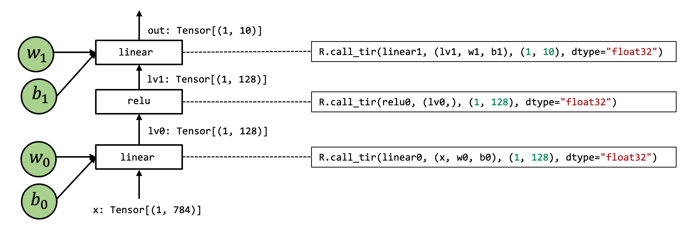

04 端到端模型整合¶
参考资料
-
英文课程主页 https://mlc.ai/summer22/ 英文课程材料 https://mlc.ai/index.html
-
中文课程主页 https://mlc.ai/summer22-zh/ 中文课程材料 https://mlc.ai/zh/index.html
本节讨论如何构建端到端模型。
准备工作¶
导入依赖项、加载数据集、下载模型参数
!python3 -m pip install mlc-ai-nightly -f https://mlc.ai/wheels
import tvm
from tvm.ir.module import IRModule
from tvm.script import tir as T, relax as R
import numpy as np
from tvm import relax
\# This is needed for deferring annotation parsing in TVMScript
from __future__ import annotations
import IPython
def code2html(code):
"""Helper function to use pygments to turn the code string into highlighted html."""
import pygments
from pygments.lexers import Python3Lexer
from pygments.formatters import HtmlFormatter
formatter = HtmlFormatter()
html = pygments.highlight(code, Python3Lexer(), formatter)
return "<style>%s</style>%s\n" % (formatter.get_style_defs(".highlight"), html)
import torchvision
import torch
test_data = torchvision.datasets.FashionMNIST(
root="data",
train=False,
download=True,
transform=torchvision.transforms.ToTensor()
)
test_loader = torch.utils.data.DataLoader(test_data, batch_size=1, shuffle=True)
class_names = ['T-shirt/top', 'Trouser', 'Pullover', 'Dress', 'Coat',
'Sandal', 'Shirt', 'Sneaker', 'Bag', 'Ankle boot']
img, label = next(iter(test_loader))
img = img.reshape(1, 28, 28).numpy()
!wget https://github.com/mlc-ai/web-data/raw/main/models/fasionmnist_mlp_params.pkl
端到端模型整合¶
在本章中，我们将使用以下模型作为示例。这是一个两层神经网络，由两个全连接层（linear）和一个有 relu 激活层组成。
为了简化问题，我们删除了最终的 softmax 层。输出分数是未标准化的，但最大值仍然对应于最可能的类别。

模型的Numpy实现¶
def numpy_mlp(data, w0, b0, w1, b1):
lv0 = data @ w0.T + b0
lv1 = np.maximum(lv0, 0)
lv2 = lv1 @ w1.T + b1
return lv2
import pickle as pkl
mlp_params = pkl.load(open("fasionmnist_mlp_params.pkl", "rb"))
res = numpy_mlp(img.reshape(1, 784),
mlp_params["w0"],
mlp_params["b0"],
mlp_params["w1"],
mlp_params["b1"])
print(res)
pred_kind = res.argmax(axis=1)
print(pred_kind)
print("NumPy-MLP Prediction:", class_names[pred_kind[0]])
模型的底层Numpy实现¶
def lnumpy_linear0(X: np.ndarray, W: np.ndarray, B: np.ndarray, Z: np.ndarray):
Y = np.empty((1, 128), dtype="float32")
for i in range(1):
for j in range(128):
for k in range(784):
if k == 0:
Y[i, j] = 0
Y[i, j] = Y[i, j] + X[i, k] * W[j, k]
for i in range(1):
for j in range(128):
Z[i, j] = Y[i, j] + B[j]
def lnumpy_relu0(X: np.ndarray, Y: np.ndarray):
for i in range(1):
for j in range(128):
Y[i, j] = np.maximum(X[i, j], 0)
def lnumpy_linear1(X: np.ndarray, W: np.ndarray, B: np.ndarray, Z: np.ndarray):
Y = np.empty((1, 10), dtype="float32")
for i in range(1):
for j in range(10):
for k in range(128):
if k == 0:
Y[i, j] = 0
Y[i, j] = Y[i, j] + X[i, k] * W[j, k]
for i in range(1):
for j in range(10):
Z[i, j] = Y[i, j] + B[j]
def lnumpy_mlp(data, w0, b0, w1, b1):
lv0 = np.empty((1, 128), dtype="float32")
lnumpy_linear0(data, w0, b0, lv0)
lv1 = np.empty((1, 128), dtype="float32")
lnumpy_relu0(lv0, lv1)
out = np.empty((1, 10), dtype="float32")
lnumpy_linear1(lv1, w1, b1, out)
return out
result =lnumpy_mlp(
img.reshape(1, 784),
mlp_params["w0"],
mlp_params["b0"],
mlp_params["w1"],
mlp_params["b1"])
pred_kind = result.argmax(axis=1)
print("Low-level Numpy MLP Prediction:", class_names[pred_kind[0]])
在TVMScript中构建端到端IRModule¶
@tvm.script.ir_module
class MyModule:
@T.prim_func
def relu0(X: T.Buffer[(1, 128), "float32"],
Y: T.Buffer[(1, 128), "float32"]):
# function attr dict
T.func_attr({"global_symbol": "relu0", "tir.noalias": True})
for i, j in T.grid(1, 128):
with T.block("Y"):
vi, vj = T.axis.remap("SS", [i, j])
Y[vi, vj] = T.max(X[vi, vj], T.float32(0))
@T.prim_func
def linear0(X: T.Buffer[(1, 784), "float32"],
W: T.Buffer[(128, 784), "float32"],
B: T.Buffer[(128,), "float32"],
Z: T.Buffer[(1, 128), "float32"]):
T.func_attr({"global_symbol": "linear0", "tir.noalias": True})
Y = T.alloc_buffer((1, 128), "float32")
for i, j, k in T.grid(1, 128, 784):
with T.block("Y"):
vi, vj, vk = T.axis.remap("SSR", [i, j, k])
with T.init():
Y[vi, vj] = T.float32(0)
Y[vi, vj] = Y[vi, vj] + X[vi, vk] * W[vj, vk]
for i, j in T.grid(1, 128):
with T.block("Z"):
vi, vj = T.axis.remap("SS", [i, j])
Z[vi, vj] = Y[vi, vj] + B[vj]
@T.prim_func
def linear1(X: T.Buffer[(1, 128), "float32"],
W: T.Buffer[(10, 128), "float32"],
B: T.Buffer[(10,), "float32"],
Z: T.Buffer[(1, 10), "float32"]):
T.func_attr({"global_symbol": "linear1", "tir.noalias": True})
Y = T.alloc_buffer((1, 10), "float32")
for i, j, k in T.grid(1, 10, 128):
with T.block("Y"):
vi, vj, vk = T.axis.remap("SSR", [i, j, k])
with T.init():
Y[vi, vj] = T.float32(0)
Y[vi, vj] = Y[vi, vj] + X[vi, vk] * W[vj, vk]
for i, j in T.grid(1, 10):
with T.block("Z"):
vi, vj = T.axis.remap("SS", [i, j])
Z[vi, vj] = Y[vi, vj] + B[vj]
@R.function
def main(x: Tensor((1, 784), "float32"),
w0: Tensor((128, 784), "float32"),
b0: Tensor((128,), "float32"),
w1: Tensor((10, 128), "float32"),
b1: Tensor((10,), "float32")):
with R.dataflow():
lv0 = R.call_tir(linear0, (x, w0, b0), (1, 128), dtype="float32")
lv1 = R.call_tir(relu0, (lv0,), (1, 128), dtype="float32")
out = R.call_tir(linear1, (lv1, w1, b1), (1, 10), dtype="float32")
R.output(out)
return out
计算图¶

计算图是用来表示深度学习网络模型在训练与推理过程中计算逻辑与状态的工具。计算框架在后端会将前端语言构建的神经网络模型前向计算与反向梯度计算以计算图的形式来进行表示。计算图由基本数据结构：张量(Tensor)和基本运算单元：算子(Operator)构成。在计算图中通常使用节点来表示算子，节点间的有向线段来表示张量状态，同时也描述了计算间的依赖关系。
call_tir¶
计算图中的每个操作步骤都包含一个R.call_tir操作。 这是引入元张量函数的过程。
具体来说，call_tir 接受一个元函数 (prim_func) 的输入列表，并分配一个输出张量res，然后将输入和输出传递给prim_func。 执行 prim_func 后，结果会填充到 res 中，然后我们可以返回结果。
这个想法是输入和输出在外部显式分配并传递给底层元函数。
Dataflow Block¶
构建并运行模型¶
我们调用 relax.vm.build 来构建这个函数。
build 函数会给我们一个可执行文件。我们可以初始化一个虚拟机执行器，使我们能够运行该函数。 此外，我们将传入第二个参数，指示我们要在哪个设备上运行端到端执行。
讨论和总结¶
-
计算图抽象有助于将元张量函数拼接在一起以进行端到端执行。
-
Relax 抽象的关键要素包括
-
call_tir 构造，将目标传递规范的元函数嵌入到计算图中
-
Dataflow block
-
计算图允许调用环境库函数和 TensorIR 函数。